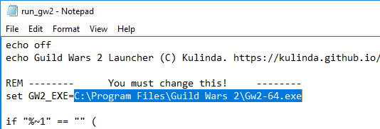

Kulinda's Guild Wars 2 Launcher
In five easy steps
Preamble
In the patch of January 22nd, 2019, arena.net removed the -email and -password command line arguments,
making it a bit more tricky to log into multiple accounts.
But there is a different way to auto-login into multiple accounts. The game already has an auto-login feature, which stores the credentials of your previously used account in a file called Local.dat. By keeping multiple versions of this file, and copying them around before starting Guild Wars 2, we can achieve auto-login with multiple accounts.
Note: This will NOT allow you to run multiple accounts at the same time. This is NOT for multiboxing!
Step 1: Prepare a folder somewhere
Just put it anywhere, Desktop or Documents is fine. Give it any name you like.
Step 2: Get the batch file
Download run_gw2.bat into the newly created folder.
Step 3: Configure the batch file
Edit the batch file:
At the top, change the path to whereever you installed Guild Wars 2:

At the bottom, change the launch options if you like. -autologin is required, the other two are optional. You can find a list of Command Line Arguments on the wiki.
While you're looking at the file, make sure you understand what it does, and double-check that there's nothing malicous.
Step 4: Create one shortcut per account
Right-click the run_gw2.bat again, select "Create Shortcut". Then right-click the shortcut, select "Properties".
In the Target field, append a space, then a name for your account. Mine are named A, B, C..., but feel free to use more descriptive names.
Optionally click "Change Icon", browse for the Gw2.exe, and select its icon.
Move the shortcut where you want it, or pin it to the taskbar.
Step 5: Run Guild Wars 2
Run the shortcut. Enter your login data, check that account name and password are remembered, and log in. The next time you tun this shortcut, you will login automatically.
Repeat steps 4 and 5 once for each account.
Bonus Step: Enjoy the game
And make sure that everyone else gets to enjoy the game as well. Be excellent to each other.
Back to kulinda.github.io